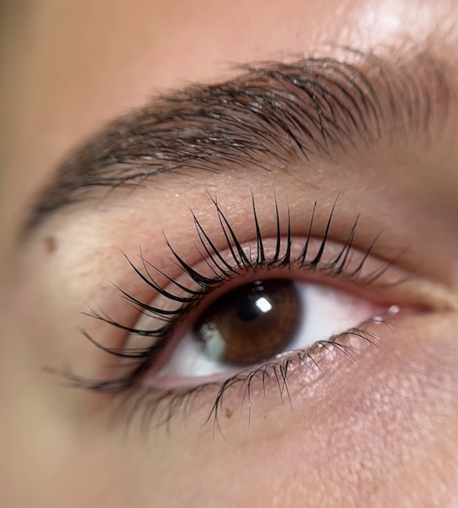

Статья
Что такое ламинирование ресниц
Ламинирование ресниц — это процедура, которая помогает сделать натуральные ресницы более выразительными без наращивания.
С помощью специальных составов ресницы фиксируются в нужном направлении, приобретают изгиб и становятся визуально длиннее и аккуратнее.

Какой эффект дает процедура
- визуально удлиняет ресницы
- создает красивый изгиб
- делает взгляд более открытым
- не требует ежедневной укладки
Кому подходит ламинирование
Процедура подходит тем, кто хочет естественный результат без наращивания и сложного ухода.